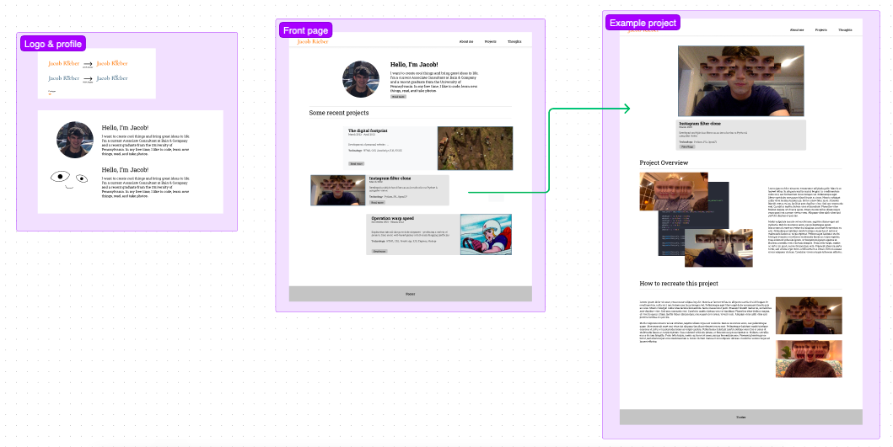

I've always secretly wanted a personal website. Egotistical, right? Yet, despite wanting a website, I really debated the utility of it. Like, what would I even talk about? However, now that I started working on different coding projects for fun, I finally had an exceuse to carve out some space online for myself to share these projects. Then, it was a question of figuring out what path I wanted to take to build this website. The main options I saw were to either use a website builder like Wix or Squarespace or build the site myself. The former is much easier and less expensive, but it’s also less customizable. With that said, building the website myself could let me customize the site to my heart’s content, but, you know, then I actually have to take the time to build it, which is a challenge. However, since I spent the past few months learning the in’s and out’s out web development, it felt like it would be cheating to rely on Wix or Squarespace, so I decided to build it myself. And honestly, that’s kind of the more fun option. I started by roughly sketching out what I wanted the website to look like with pencil and paper, and then I built out a more develop blank of the the site on Figma. After that, it was just a matter of coding the site via HTML, CSS, and JavaScript. This exact code can be found on my personal website's GitHub repository. Below, you can see an example mock-up of the website on Figma.
I decided to create a simple, static website because it’s easier to deploy than a full-stack web application and would be easy to host on GitHub. However, if this website grows, I’ll likely regret this decision and transition the site to a full-stack application with templating functionalities, as that’ll be easier to scale. For now, however, this seemed like the level of complexity a simple personal site needed.